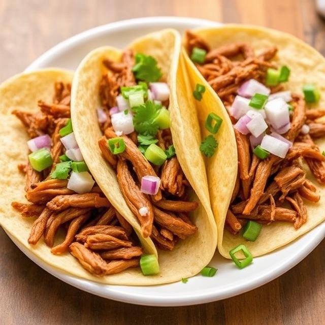

Carnitas

Description
This Carnitas recipe features tender, flavorful pork shoulder slow-cooked with garlic, onion, orange juice, and a blend of
Ancho, Guajillo, and Árbol chiles. Rubbed with oregano, cumin, and salt, the pork is cooked until fall-apart tender,
then shredded and crisped in lard for rich, golden edges. Perfect for tacos, the result is a juicy, smoky, and slightly citrusy dish with irresistible crispy bits.
Ingredients
- 4# Pork Butt
- 1Tablespoon Salt
- 2Teaspoons Ground Black Pepper
- 1 Large Onion
- 3 Ancho Chilies
- 2 Guajillo Chilies
- 6 Chilies De Arbol
- 5 Cloves Garlic
- 2-3 Medium Tomatoes
- Juice from two Oranges
- 32oz Chicken Stock
Instructions
- Dry the pork and season with salt and pepper
- Quarter the onion and add it to the slow cooker along with the garlic and dried chilies.
Place the pork on top of everything
- Squeeze the oranges on the pork and pour the chick stock in the slow cooker
- Cook on low for 10hrs
- Once done pull the pork out to cool slightly. Remove the chilies(remove the stems and discard),
onion, garlic, and place in a blender with a little bit of the cooking liquid then blend to make a quick sauce
- Once the pork has cooled enough for you to shred with your hands start shredding and remove any big chucks of fat that didn't render
- Heat a large skillet on high to medium high. Use a tablespoon of lard and then throw in shredded pork. Crisp it up to your desire
- Heat some corn tortillas and place the pork with the sauce and some chopped onion and clinatro
- Enjoy!
Home